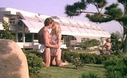

Rubicun III |
|
|||||
|  |
| Nome del sistema | Rubicun |
| Classe | M |
| Forma di vita senziente | Edo |
Gli abitanti di questo pianeta, gli Edo, venerano
un'entità transdimensionale, da loro chiamata Dio, che li guida e vigila su di loro. La
legge, sul loro pianeta è gestita da una serie di mediatori che a caso
controllano una zona, chiamata «Zona di castigo», in cui la violazione di
una qualsiasi legge comporta la morte immediata.